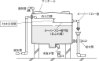
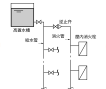
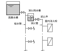

2024年
問題111 給水設備の汚染に関する次の記述のうち，最も不適当なものはどれか．
（1）クロスコネクションとは，飲料水系統と他の配管系統を配管などで直接接続することである．
（2）大容量の貯水槽の場合は，槽内に迂回壁を設置して滞留域の発生を抑制する．
（3）大使器洗浄弁には，大気圧式バキュームブレー力を設置する．
（4）上水配管から消火系統への水の補給は，消火用水槽を設けて行う．
（5）洗面器における吐水口空間は，水栓の吐水口端と水受け容器のオーパフロー口との垂直距離である．
2024年
問題111 正解（5） 頻出度AAA
洗面器の吐水口空間は，給水栓または給水管の吐水口端とあふれ縁との垂直距離をいう（2024-111-1 図参照）．
オーバフロー口云々は水槽類に限る．これは，「あふれ縁」の定義が，次のように水槽類と他の衛生器具とでは異なっていることによる．
あふれ縁：衛生器具またはその他の水使用機器の場合はその上縁において，水槽類の場合はオーバフロー口において，水があふれ出る部分の最下端をいう（2024-111-2図参照）．

-(1) クロスコネクションの例：給水系統と屋内消火栓の系統を，逆止弁を介して接続（2024-111-3 図参照）．-(4) に書かれているように，消火用水槽で吐水口空間を設けて給水するのが正しい（2024-111-4 図参照）．
2024-111-3図 消火管とのクロスコネクション
2024-111-4図 消火管への補給水管


-(2) 貯水槽の迂回壁2024-111-5図参照．
-(3) 給水管に生じた負圧によって汚水が逆流する逆サイホン作用を防止するには，吐水口空間の確保とバキュームブレーカの設置がある．
水受け容器では，逆サイホン作用の防止のために吐水口空間を確保するのが基本であるが，吐水口空間が取り難い場合は，給水管の負圧を防止するためにバキュームブレーカを給水弁等に取り付ける．給水管内が負圧になるとバキュームブレーカから空気が流れ込み負圧を解消する．
二次側が大気に開放された大便器洗浄弁のような場合は，大気圧式でも給気可能で逆流を防止できるが，弁の二次側も圧力がかかっているような配管では，大気圧式では給気できないので，一次側，二次側の圧力差で逆止弁と吸気弁を作動させる圧力式バキュームブレーカを用いる．床埋め込み式の散水栓などに利用する（2024-111-6図，2024-111-7図参照）．
出典 SHASE-S206-2009p70
出典 給水装置工事主任技術者試験 平成26年 給水装置の構造及び性能 問題9
大気式，圧力式，いずれの場合も，器具のあふれ縁から 150mm 以上の高さに取り付ける．